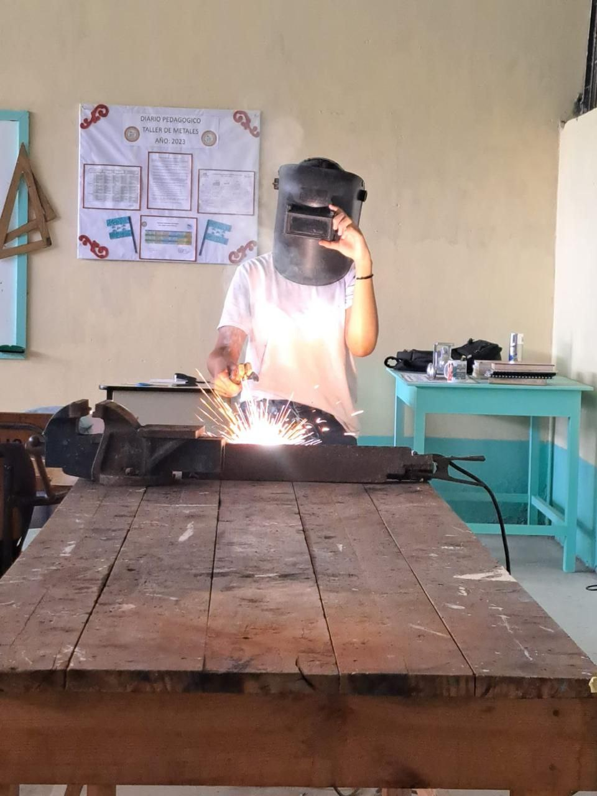

El taller de metal y forja es un espacio dotado de los medios y las tecnologías adaptadas a procedimientos y posibilidades artesanales y humanas (no técnicas industriales) relacionadas con el metal en general.
Fundamentalmente se trabaja el hierro en sus distintas versiones por las posibilidades plásticas que ofrece y la relativa facilidad de trabajo.
En este taller incidimos en la importancia que tiene, para el alumno, entender el lenguaje metálico en todos los sentidos, con el objetivo de adquisición de recursos y destrezas que sirvan en un futuro para desenvolverse en un mundo profesional.
